Unsere Geschichte
Vom ersten Urlaub auf Kos zu heute
Scrollen, um weiterzulesen ↓Ein ziemlich guter Zufall
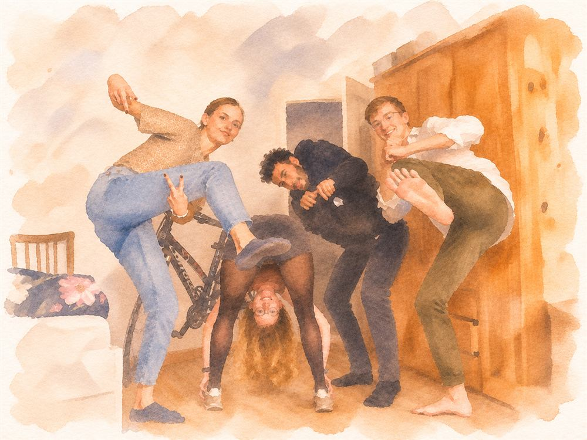
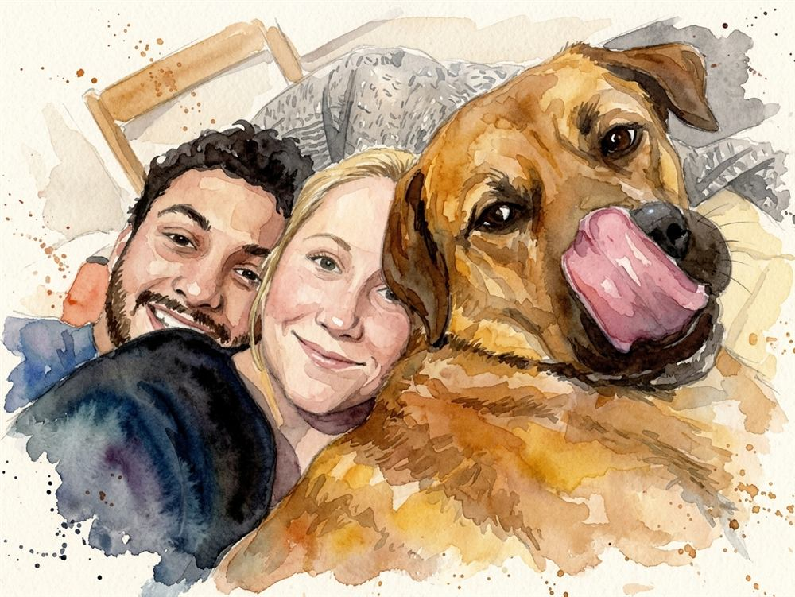
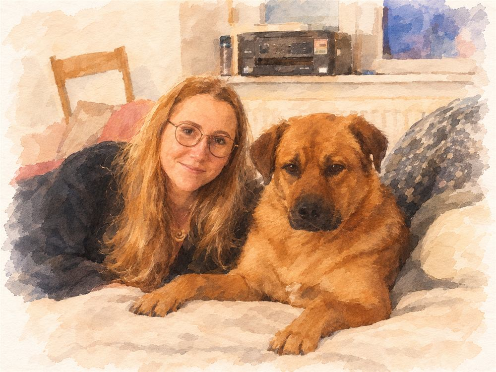

Manchmal beginnt eine große Geschichte mit einer ziemlich alltäglichen Sache. Bei uns war es ein WG-Casting. Mali zog aus und Dario zog ein – eigentlich ein denkbar ungünstiger Start für eine gemeinsame Zukunft.
Doch Mali kam immer wieder zu Besuch. Aus kurzen Begegnungen wurden längere Abende, aus beiläufigen Gesprächen Vertrautheit und aus einer Bekanntschaft langsam etwas, das sich immer mehr nach mehr anfühlte.
Besonders eine hatte Mali ziemlich schnell um den Finger gewickelt: Havana. Die beiden verstanden sich auf Anhieb und schlossen sich gegenseitig ins Herz. Und so wurden aus gelegentlichen Besuchen immer mehr gemeinsame Momente, bis Mali irgendwann gar nicht mehr so richtig wegzudenken war.
Aus Besuchen wurde ein Zuhause
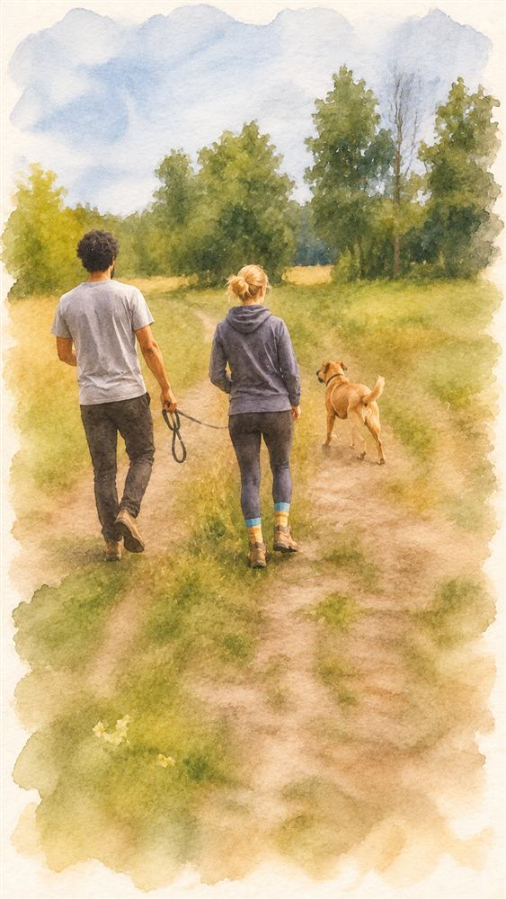
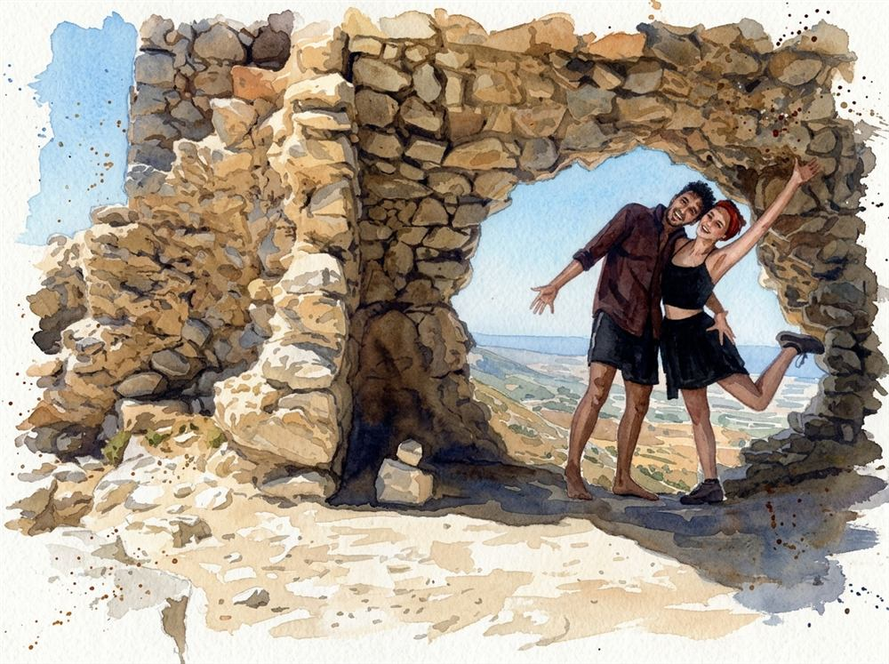
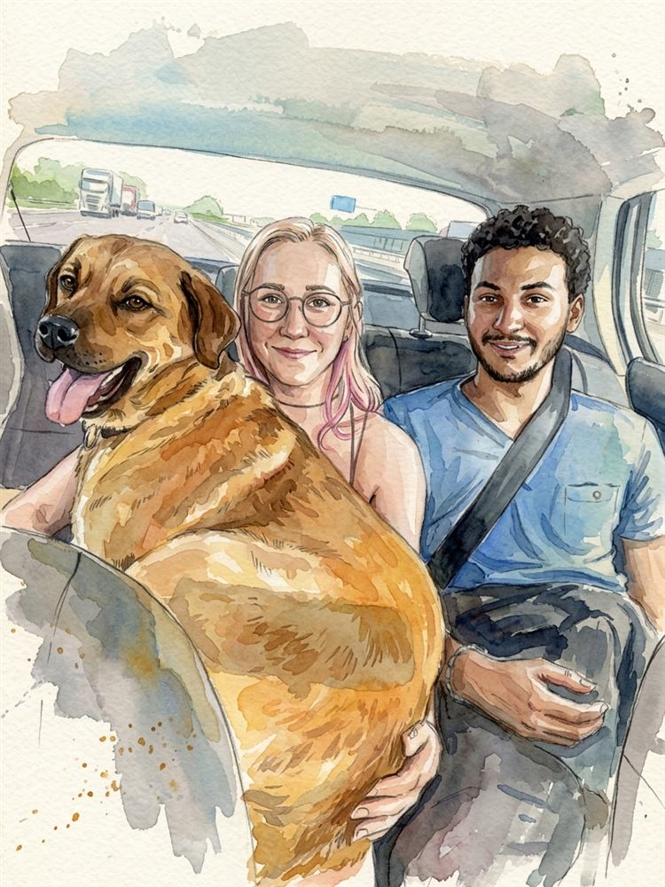
Mit der Zeit wurde aus dem anfänglichen Kennenlernen eine immer engere Verbindung. Wir verbrachten mehr und mehr Zeit miteinander, teilten kleine und große Momente des Alltags und merkten irgendwann, dass der andere längst einen festen Platz im eigenen Leben gefunden hatte.
Unser erstes großes Abenteuer war unser erster gemeinsamer Urlaub auf Kos. Dort entdeckten wir nicht nur die Insel, sondern auch unsere gemeinsame Liebe zum Reisen auf zwei Rädern – mit dem Roller die Gegend erkunden, spontan anhalten und einfach gemeinsam unterwegs sein.
Und irgendwann war klar: Aus zwei Leben sollte eines werden. Nach etwa anderthalb Jahren war es so weit und wir zogen zusammen. Aus zwei Wohnungen wurde ein gemeinsames Zuhause, aus Alltag wurde Alltag zu zweit und aus einem Wir wurde etwas, das sich ganz selbstverständlich anfühlte.
Und Havana? Die war natürlich längst fester Bestandteil dieser kleinen Familie.
Weihnachten, Familie und ganz viel Wir


Ein gemeinsames Zuhause bedeutete auch, immer mehr vom Leben des anderen kennenzulernen. Weihnachten wurde zusammen verbracht, Familien kennengelernt und nach und nach wuchsen zwei Lebenswelten immer näher zusammen.
Es entstanden neue Traditionen, gemeinsame Erinnerungen und viele kleine Momente, die irgendwann ganz selbstverständlich zu unserem Leben gehörten.
Denn eine Beziehung wächst nicht nur durch die großen Abenteuer. Oft sind es gerade die unscheinbaren Dinge, die am Ende am meisten bedeuten: ein gemeinsames Frühstück, gemütliche Abende, vertraute Abläufe und das Zusammensein mit den Menschen, die einem am Herzen liegen.
Und irgendwo zwischen all diesen kleinen Momenten wurde aus uns immer mehr ein richtig gutes Team – mit einem gemeinsamen Alltag und gemeinsamen Wurzeln.
Zusammen ist die Welt noch ein bisschen größer


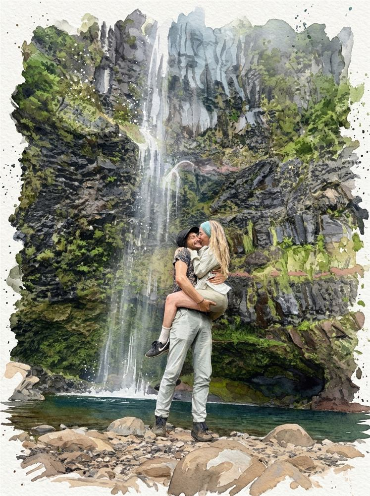


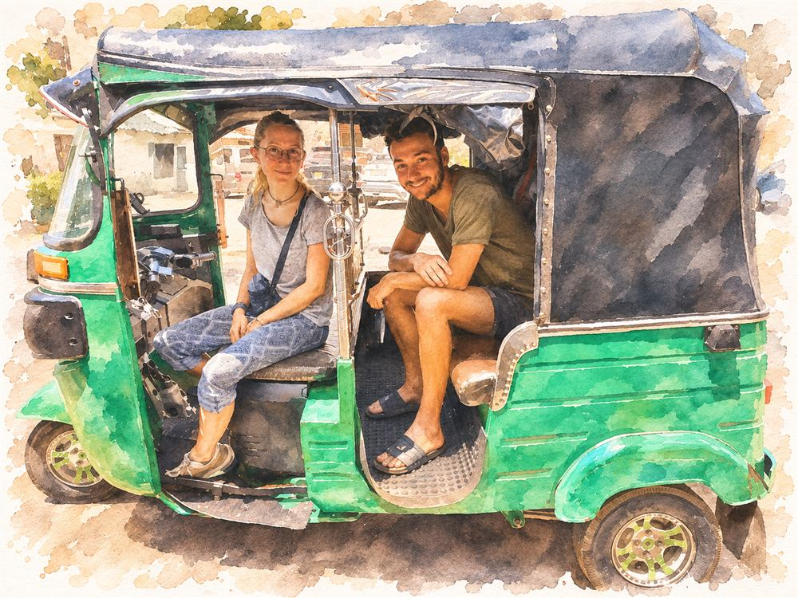
Dass wir gerne gemeinsam die Welt entdecken, zeigte sich bereits bei unserem ersten gemeinsamen Urlaub auf Kos. Sonne, Meer, neue Eindrücke und die Erkenntnis, dass das Reisen zu zweit einfach besonders viel Spaß macht.
Und dabei sollte es nicht bleiben: Sri Lanka, Zypern, Vietnam und Thailand folgten. Jedes Land brachte neue Abenteuer, besondere Begegnungen und Geschichten mit sich, die wir heute nicht mehr missen möchten.
Ob fremde Landschaften erkunden, durch unbekannte Straßen schlendern oder einfach gemeinsam am Strand sitzen – wir sammelten nicht nur Stempel im Reisepass, sondern vor allem Erinnerungen fürs Leben.
Mit jedem Urlaub wurde uns klarer: Es ist gar nicht so wichtig, wo wir gerade sind. Viel schöner ist es, jemanden an seiner Seite zu haben, mit dem sich jeder Ort ein bisschen wie Zuhause anfühlt.
Ein eingespieltes Team
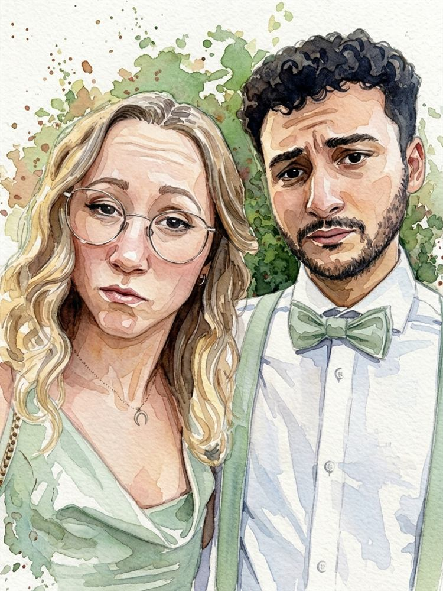

Über die Jahre ist aus der anfänglichen Verliebtheit etwas gewachsen, das noch viel mehr umfasst. Wir haben gemeinsam gelacht, Neues ausprobiert, Pläne geschmiedet und so manches Abenteuer erlebt.
Mit Havana an unserer Seite ist aus zwei Menschen eine kleine Familie geworden. Es gab unzählige Spaziergänge, gemütliche Abende, spontane Ideen und natürlich auch die ganz normalen Tage, die vielleicht gar nicht spektakulär waren, aber gerade deshalb so wertvoll sind.
Irgendwann merkt man, dass Glück nicht immer aus großen Momenten bestehen muss. Manchmal ist es einfach das Wissen, seinen Lieblingsmenschen direkt neben sich zu haben – und jemanden, mit dem selbst die alltäglichsten Dinge besonders werden.
Madeira und eine Frage für immer


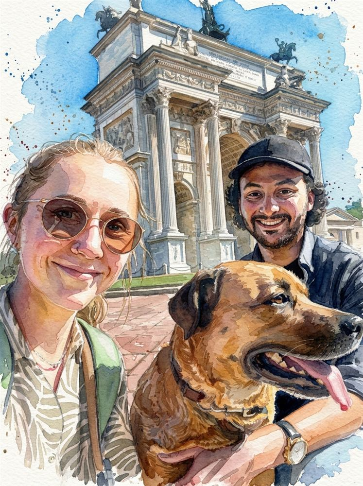
2025 stand wieder einmal ein besonderer Urlaub an. Diesmal ging es für uns nach Madeira – allerdings mit einem kleinen Geheimnis im Gepäck.
Denn während Mali von einem schönen Überraschungsurlaub ausging, hatte Dario noch etwas ganz anderes vorbereitet. Zugegeben: Nach all den gemeinsamen Jahren hatte er sich mit diesem Vorhaben auch wirklich Zeit gelassen.
Doch das Warten sollte sich lohnen. Zwischen der beeindruckenden Landschaft Madeiras und mit Blick auf den Atlantik wurde aus dieser Reise ein unvergessliches Erlebnis. Dario stellte endlich die große Frage und die Antwort könnt ihr euch vermutlich denken, sonst wärt ihr jetzt nicht hier.
Aus all den gemeinsamen Jahren, Reisen und Erlebnissen wurde an diesem Tag ein Versprechen für die Zukunft. Und damit begann ein ganz neues Kapitel unserer Geschichte.
Das nächste Kapitel schreiben wir gemeinsam
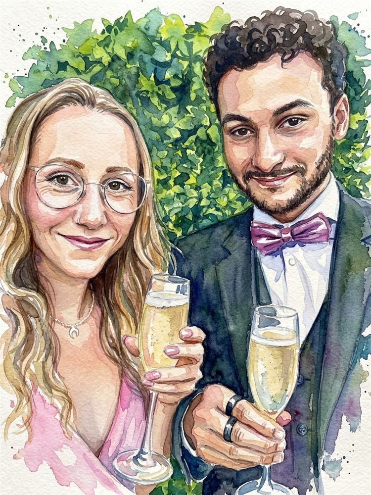


Wenn wir heute zurückblicken, sehen wir eine Geschichte, die mit einem WG-Casting begann und uns über gemeinsame Wohnungen, Weihnachten, Familienfeste und viele Länder hierher geführt hat.
Aus einem ziemlich guten Zufall wurde eine Begegnung. Aus einer Begegnung wurde Liebe. Und aus Liebe wurde eine gemeinsame kleine Welt, die mit jedem Jahr ein bisschen größer geworden ist.
Jetzt wartet das nächste Abenteuer: unsere Hochzeit.
Und diesmal dürfen all die Menschen, die Teil unserer Geschichte sind, dabei sein, wenn wir gemeinsam das nächste Kapitel aufschlagen.